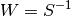

statsmodels.sandbox.regression.gmm.LinearIVGMM.fit¶
-
LinearIVGMM.fit(start_params=None, maxiter=10, inv_weights=None, weights_method='cov', wargs=(), has_optimal_weights=True, optim_method='bfgs', optim_args=None)¶ Estimate parameters using GMM and return GMMResults
TODO: weight and covariance arguments still need to be made consistent with similar options in other models, see RegressionResult.get_robustcov_results
Parameters: start_params : array (optional)
starting value for parameters ub minimization. If None then fitstart method is called for the starting values.
maxiter : int or ‘cue’
Number of iterations in iterated GMM. The onestep estimate can be obtained with maxiter=0 or 1. If maxiter is large, then the iteration will stop either at maxiter or on convergence of the parameters (TODO: no options for convergence criteria yet.) If maxiter == ‘cue’, the the continuously updated GMM is calculated which updates the weight matrix during the minimization of the GMM objective function. The CUE estimation uses the onestep parameters as starting values.
inv_weights : None or ndarray
inverse of the starting weighting matrix. If inv_weights are not given then the method start_weights is used which depends on the subclass, for IV subclasses inv_weights = z’z where z are the instruments, otherwise an identity matrix is used.
weights_method : string, defines method for robust
Options here are similar to
statsmodels.stats.robust_covariancedefault is heteroscedasticity consistent, HC0currently available methods are
- cov : HC0, optionally with degrees of freedom correction
- hac :
- iid : untested, only for Z*u case, IV cases with u as error indep of Z
- ac : not available yet
- cluster : not connected yet
- others from robust_covariance
wargs` : tuple or dict,
required and optional arguments for weights_method
- centered : bool, indicates whether moments are centered for the calculation of the weights and covariance matrix, applies to all weight_methods
- ddof : int degrees of freedom correction, applies currently only to cov
- maxlag : int number of lags to include in HAC calculation , applies only to hac
- others not yet, e.g. groups for cluster robust
has_optimal_weights: If true, then the calculation of the covariance
matrix assumes that we have optimal GMM with . Default is True. TODO: do we want to have a different default after onestep?
optim_method : string, default is ‘bfgs’
numerical optimization method. Currently not all optimizers that are available in LikelihoodModels are connected.
optim_args : dict
keyword arguments for the numerical optimizer.
Returns: results : instance of GMMResults
this is also attached as attribute results
Notes
Warning: One-step estimation, maxiter either 0 or 1, still has problems (at least compared to Stata’s gmm). By default it uses a heteroscedasticity robust covariance matrix, but uses the assumption that the weight matrix is optimal. See options for cov_params in the results instance.
The same options as for weight matrix also apply to the calculation of the estimate of the covariance matrix of the parameter estimates.